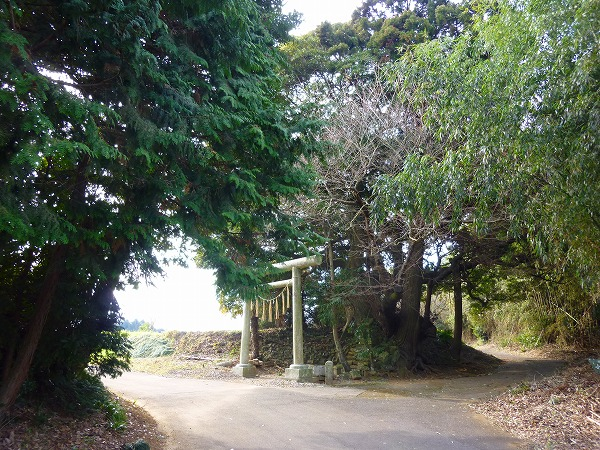
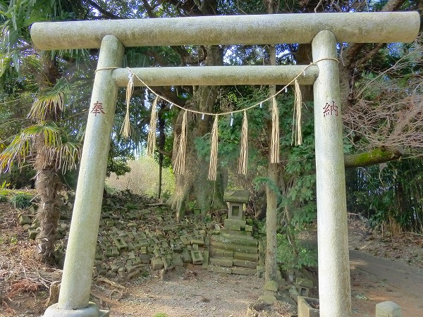
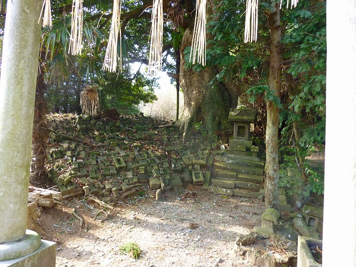
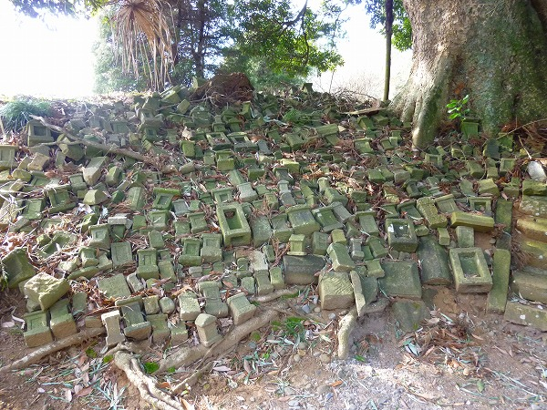
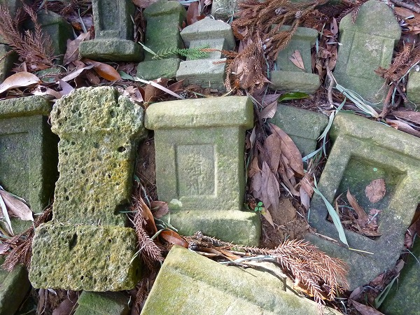
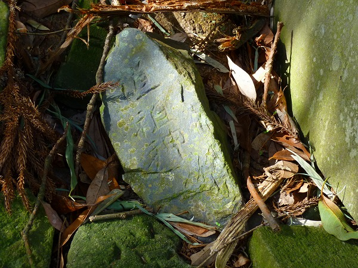
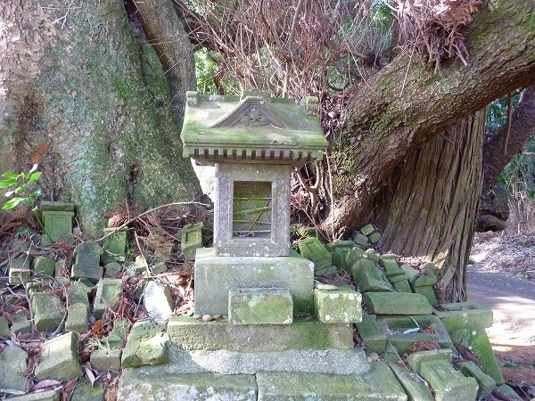
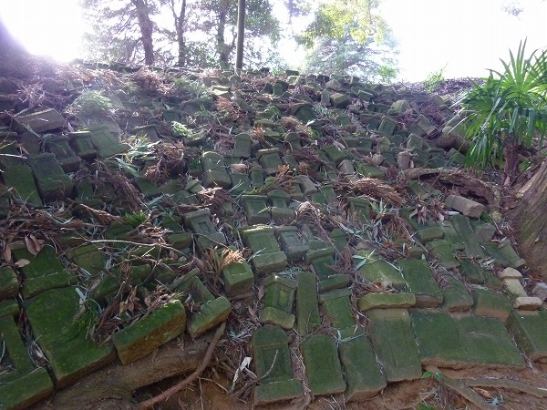
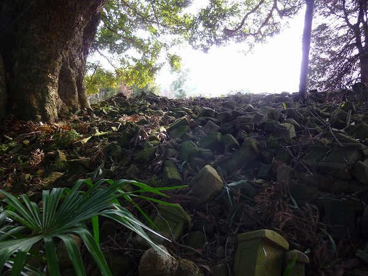

中里の道祖神/千葉県
今はなきKeiさんのブログで知った中里の道祖神。
何とも不思議なところだった。

成田市の郊外の畑と林が入り組んだような場所にある。
古い街道だったのだろうか、丁度三叉路になっている部分に鳥居が建っている。

鳥居は比較的近年に建てられたものだ。
その鳥居を潜ると…

四角い石で出来た「何か」が大量に積み上げられているではないか！

コレ全部道祖神なんですって。

確かに幾つかの石には道祖神という文字が刻まれている。

確かに道祖神は街道の辻などに設置され、疫病や災厄が入ってこないようにするムラの守護神だ。
しかしこのように大量に奉納されているのは見たことがないぞ。

数段の階段の上には石の祠が建っている。
コレが道祖神の親分なんだろうか。

祠の後ろには巨大なダブノキがあり、その逆サイドにも大量の道祖神が奉納されている。
これらは乱雑に積み上げられている、という風ではなく、ひとつひとつ並べられている、といった感じだった。

これだけ大量に道祖神が奉納されている、という事はある時期に一定の時期を以て奉納された可能性が高いと思われる。
見る限り近年になって奉納された道祖神はないようなので、複数の人々が毎年奉納したのではなかろうか。
このような道祖神奉納の習俗は聞いたことがないので極めてレアなケースだと思う。
2010.01.
珍寺大道場 HOME